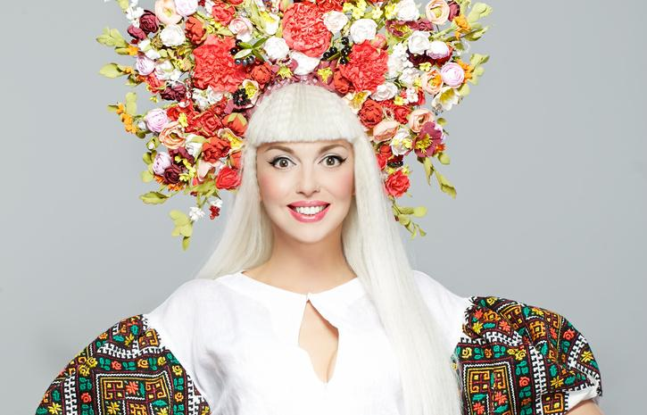
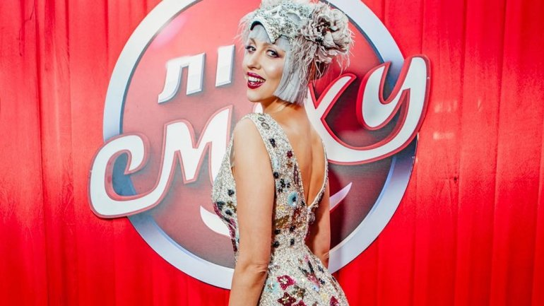

Музыка
Карьера певицы началась с альбома «Приходи ко мне», состоящего из 11 треков. Первый клип на сингл «Так не бывает» был показан по украинским телеканалам, но оказался незамеченным широкой аудиторией.
Ольга Полякова успела одно время поработать в качестве модели в мировой столице моды. Это случилось после подписания выгодного контракта с агентством «Мэдисон». Но после окончания контракта и курсов Рикса Полякова вернулась. Но не в Киев, а в Москву. Там на одной из звездных вечеринок девушка познакомилась с Денисом Клявером. Вместе музыканты записали композицию «Обними меня».

Следующим шагом в карьере украинской певицы стало сотрудничество с коллегой Любашей. В результате этого появился совместный альбом, вышедший в свет в 2005 году. Вместе с новыми знакомствами артистка сменила продюсера и стала подопечной Александра Ревзина. Но сотрудничество оказалось скоротечным. Вскоре продвижением артистки занялся Юрий Барыбин, который усовершенствовал имидж певицы, привнеся в него черты кукольности во многом за счет использования платьев в стиле baby doll.
В 2008-ом поклонники голосистой красавицы получили от девушки сюрприз в виде макси-сингла «Суперблондинка», после выхода которого Ольга начала называть себя не иначе, как «Суперблондинка». Режиссером клипа на эту песню стал питерский клипмейкер Александр Игудин.
В 2011 году Ольга Полякова посотрудничала с соотечественницей, звездой эстрады Людмилой Гурченко. Артистки записали дуэтом хит «Алло».
Что касается знаменитой «фишки» Ольги Поляковой в виде кокошника, то он появился в 2012-ом, после успешного сотрудничества с гендиректором музыкальной компании «EA Secret Service» Михаилом Ясинским. В этом колоритном старинном украшении Оля появилась в хите «Russian Style». Деталь гардероба идеально вписалась в стиль певицы. Сейчас для выступлений артистки дизайнеры создают кокошники, которые выглядят как произведения искусства. Ряд моделей достигает 17 кг, каждый образец уникален и неповторим. В создании кокошников используются стразы, перья, кристаллы, цветы и дизайнерские элементы.
Через год плодом сотрудничества Ольги Поляковой и продюсера Алексея Потапенко, более известного под псевдонимом Потап, стал сингл «#Шлепки», после чего певица порадовала поклонников очередным хитом в стиле суперпоп «Люли». Клип на эту песню прибавил рейтингов артистке – на хостинге YouTube видео посмотрели 6 миллионов пользователей. 2014 год ознаменовался выпуском треков «Брошенный котеня», «Асталависта, сепаратиста!» и новогоднего видео «С Новым годом!».
В марте 2015-го Ольга Полякова презентовала новую песню под названием «Любовь-морковь», видеоклип на которую появился в апреле того же года. А в июле «Суперблондинка в кокошнике» выпустила песню «Первое лето без него».
Свежий хит от Ольги, выпущенный в 2016-ом, – сингл «О Боже, как больно!», клип на который снял Алан Бадоев.
Творческая биография Ольги Поляковой – это не только песни, но и передачи, телешоу, в которых артистка зарекомендовала себя участницей или телеведущей. С участием певицы в свое время выходили телепередачи «Дольче Вита Капут» («Новый канал»), «Привет, декрет!» («М1»), «Кто против блондинок?» («Новый канал»), «Суперзвезда» («1+1»), «Вышка» («1 +1»).
В программах «Зоряні яйця» и «Светская жизнь» Ольга Полякова попробовала себя в качестве телеведущей. Артистка также представала перед телезрителями в роли участницы телевизионных шоу «Народная звезда», «Как две капли», «Звезда + Звезда», где становилась финалисткой и даже победительницей. В составе жюри популярного проекта «Лига Смеха» Полякова предстала в 2017 году.